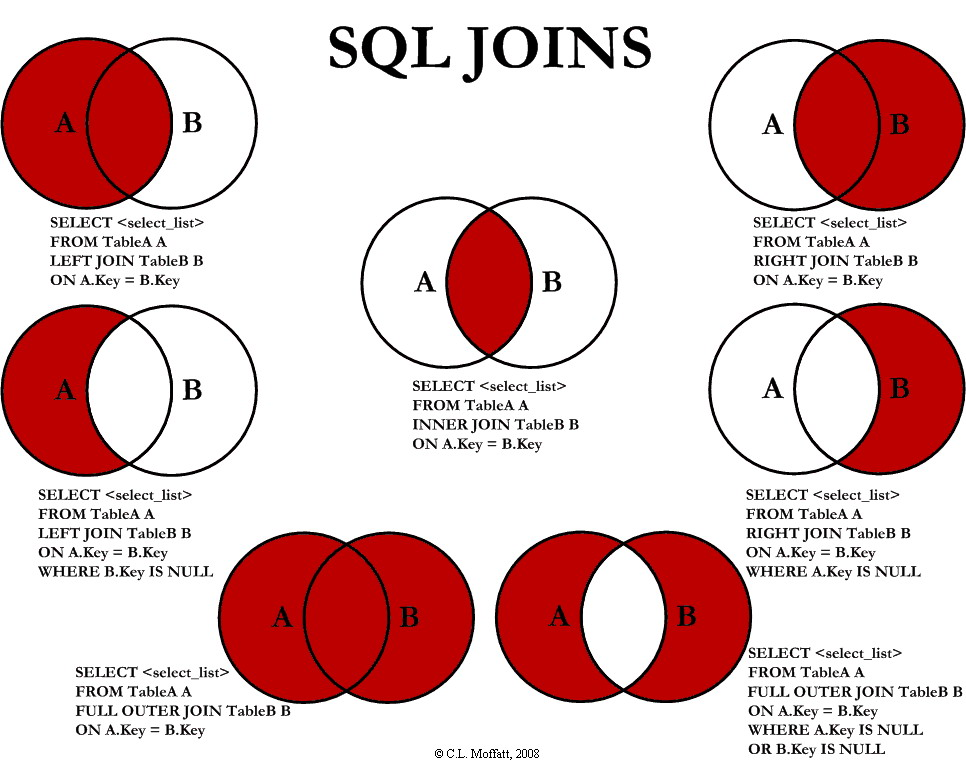

The Programmer's Compendium
Broken out into:
- Recipes for setting up or using particular software/services
- Python because I do so much of it
- Details about particular Topics
- Rundown of Linux
- Miscellaneous information about particular Domains
- General guidelines on Software Development
- Underlying Fundamentals of programming
Other resources include:
- My Setup - How to setup a computer for software development.
- Learn It - The predecessor to this book.

This work is licensed under a Creative Commons Attribution-ShareAlike 4.0 International License.
Nginx
Config Generator: https://nginxconfig.io/
Nginx is a reverse proxy, allowing a single port to host multiple websites.
add_headerdoes not inherit properly.
Global configurations
Global configuration (http block-level) can be placed inside /etc/nginx/conf.d/*.conf.
TLS
# tls.conf
# Configure TLS security (requires setting parameters in server blocks to activate)
# USAGE:
# You must generate a dhparam.pem file.
# You must set ssl_certificate, ssl_certificate_key, and ssl_trusted_certificate.
# You must NOT use add_header inside your server {} block at all.
ssl_session_cache shared:SSL:10M;
ssl_session_timeout 180m;
ssl_session_tickets off;
# Secure SSL config - https://mozilla.github.io/server-side-tls/ssl-config-generator/
ssl_protocols TLSv1.2 TLSv1.3;
ssl_dhparam /etc/ssl/certs/dhparam.pem; # Must generate this manually
ssl_ciphers ECDHE-ECDSA-CHACHA20-POLY1305:ECDHE-RSA-CHACHA20-POLY1305:ECDHE-ECDSA-AES256-GCM-SHA384:ECDHE-RSA-AES256-GCM-SHA384:ECDHE-ECDSA-AES256-SHA384:ECDHE-RSA-AES256-SHA384:ECDHE-ECDSA-AES128-GCM-SHA256:ECDHE-RSA-AES128-GCM-SHA256;
# Already set in /etc/nginx/nginx.conf
# ssl_prefer_server_ciphers on;
# SSL OSCP Stapling
ssl_stapling on;
ssl_stapling_verify on;
resolver 8.8.8.8 8.8.4.4;
# Force SSL to this domain (+subdomains) for 6 months (+ preload list)
add_header Strict-Transport-Security "max-age=15768000; includeSubDomains; preload" always;
Security Headers
There are several headers used for security, which can be set by Nginx or by your application. The following global configuration file will set a default if upstream has not provided one.
# security_headers.conf
# Ensure HTTP headers that are important for security are set.
# We set some defaults which can be overridden by the upstream server.
# USAGE:
# You must use proxy_hide_header/uwsgi_hide_header to hide the upstream
# headers for all headers that we list below.
# You must NOT use add_header inside your server {} block at all.
map $upstream_http_referrer_policy $referrer_policy {
default $upstream_http_referrer_policy;
'' "strict-origin-when-cross-origin";
}
map $upstream_http_x_content_type_options $x_content_type_options {
default $upstream_http_x_content_type_options;
'' "nosniff";
}
map $upstream_http_x_frame_options $x_frame_options {
default $upstream_http_x_frame_options;
'' "DENY";
}
map $upstream_http_x_xss_protection $x_xss_protection {
default $upstream_http_x_xss_protection;
'' "1; mode=block";
}
add_header Referrer-Policy $referrer_policy always;
add_header X-Content-Type-Options $x_content_type_options always;
add_header X-Frame-Options $x_frame_options always;
add_header X-XSS-Protection $x_xss_protection always;
Note:: X-XSS-Protection has been superseded with Content Security Policies (CSPs)
Note: X-Frame-Options has been superseded with the frame-ancestors CSP
TODO: Deny the use of browser features (Feature Policies)
TODO: Deny the use of cross-site features (Content Security Policies)
Servers
Servers can be configured inside /etc/nginx/sites-available/, but a symlink should be created inside /etc/nginx/sites-enabled/ for them to become active.
Default Server - Redirect to HTTPS
server {
listen {{ public_ipv4 }}:80 default_server;
listen [{{ public_ipv6 }}]:80 default_server;
# Redirect all HTTP requests to HTTPS with a 301 Moved Permanently response.
return 301 https://$host$request_uri;
}
Default Server - Prevent non-SNI Traffic
# HTTPS default server for non-SNI requests
# Prevents an otherwise random public server certificate being leaked
# Also captures SNI requests where we are not hosting that domain here
server {
listen {{ public_ipv4 }}:443 default_server;
listen [{{ public_ipv6 }}]:443 default_server;
server_name _;
ssl_certificate /etc/ssl/certs/ssl-cert-snakeoil.pem;
ssl_certificate_key /etc/ssl/private/ssl-cert-snakeoil.key;
return 444;
}
A HTTPS Server
server {
listen {{ public_ipv4 }}:443 ssl http2;
listen [{{ public_ipv6 }}]:443 ssl http2;
server_name {{ domain }};
charset utf-8;
# Check if this certificate is really served for this server_name
# https://serverfault.com/questions/578648/properly-setting-up-a-default-nginx-server-for-https
if ($host != $server_name) {
return 444;
}
# Certificate
ssl_certificate /etc/letsencrypt/live/{{ domain }}/fullchain.pem;
ssl_certificate_key /etc/letsencrypt/live/{{ domain }}/privkey.pem;
ssl_trusted_certificate /etc/letsencrypt/live/{{ domain }}/chain.pem;
# Lets Encrypt SSL Cert renewal
location ~ /.well-known/acme-challenge {
allow all;
root /var/www/letsencrypt;
}
}
- Ubuntu's Nginx configuration does a lot of things itself including: sendfile, tcp_nopush, tcpnodelay, keepalive_timeout, gzip, basic SSL configuration.
- Doing
listen [::]:443 ipv6only=offdoes not seem to work well (maybe due to use of IP addresses on other servers?). It is also Linux-only.
Serving Files & Upstream Proxies
uWSGI Proxy
upstream uwsgicluster {
server unix:///run/uwsgi/app/APP_NAME/socket;
}
server {
...
# Proxying connections to application servers
location / {
include uwsgi_params;
uwsgi_pass uwsgicluster;
uwsgi_param Host $host;
uwsgi_param X-Real-IP $remote_addr;
uwsgi_param X-Forwarded-For $proxy_add_x_forwarded_for;
uwsgi_param X-Forwarded-Host $server_name;
uwsgi_param X-Forwarded-Proto $scheme;
uwsgi_param X-Forwarded-Port $server_port;
# Correct handling of fallbacks for HTTP headers
uwsgi_hide_header Referrer-Policy;
uwsgi_hide_header X-Content-Type-Options;
uwsgi_hide_header X-Frame-Options;
uwsgi_hide_header X-XSS-Protection;
}
}
HTTP Proxy
server {
...
# Proxying connections to application servers
location / {
proxy_pass http://localhost:8080;
# Required to rewrite "Location" header for Jenkins
proxy_redirect http://localhost:8080 https://{{ domain }};
proxy_read_timeout 60;
proxy_http_version 1.1;
proxy_set_header Host $host;
proxy_set_header X-Real-IP $remote_addr;
proxy_set_header X-Forwarded-For $proxy_add_x_forwarded_for;
proxy_set_header X-Forwarded-Host $server_name;
proxy_set_header X-Forwarded-Proto $scheme;
proxy_set_header X-Forwarded-Port $server_port;
# Correct handling of fallbacks for HTTP headers
proxy_hide_header Referrer-Policy;
proxy_hide_header X-Content-Type-Options;
proxy_hide_header X-Frame-Options;
proxy_hide_header X-XSS-Protection;
}
}
Serving Static Files
server {
...
# Serve static files
rewrite ^/robots.txt /static/$request_uri last;
location /static/ {
alias /var/www-data/static/;
disable_symlinks if_not_owner; # Extra-security
gzip_static on;
# Performance
# access_log off;
open_file_cache max=1000;
open_file_cache_errors on;
}
}
A neat command to compress static files: find -L . -type f ! -iname "*.gz" ! -iname "*.png" ! -iname "*.jpg" ! -iname "*.jpeg" ! -iname "*.gif" ! -iname "*.webp" ! -iname "*.heif" -exec gzip --best -kf "{}" \;
Performance/Tuning
- sendfile - directly from kernel to network socket - covered by Ubuntu, but consider adding
sendfile_max_chunk- Note that this does not work with gzip!
- open_file_cache - do not recheck filesystem for file on every request
- gzip - covered by Ubuntu for HTML only...
- gzip_static - do not compress on the fly, serve pre-generated .gz files
- limit_req - consider for rate limiting number-of-requests by IP
- (limit_conn - consider for rate limiting number-of-requests by connections - alternative to above?)
- limit_rate - consider for limiting a individual request by limiting the network speed
# Rate limit all requests for a server by IP address
limit_req_zone $binary_remote_addr zone=myzone:10m rate=1r/s;
server {
...
limit_req_status 429;
limit_req zone=myzone burst=60 nodelay;
}
uWSGI
gunicorn is an alternative that may be simpler to use.
The documentation that likes telling stories. uWSGI has a stupid insane number of features.
uWSGI is best combined with a web-server like Nginx: better at serving static files, the reverse-proxy buffers requests before forwarding to avoid wasting app-workers' time (Slowloris DOS), and possibly better security. Other app-servers may not have the latter issue.
[uwsgi]
; Increased efficiency for larger number of processes(/threads) (no reason not to).
thunder-lock = True
; (Threads disabled)
processes = 2
harakiri = 30
; uwsgitop <stats-socket>
stats = /run/uwsgi/app/APP_NAME/stats-socket
memory-report = True
; Clear environment on exit
vacuum = True
REPLACE_ME_HOST_NAME otherwise return HTTP 421 Misdirected Request (security)
route-if-not = equal:${HTTP_HOST};REPLACE_ME_HOST_NAME return:421
- Due to uWSGI's default pre-forking behaviour, you may want
lazy-appsor a@postforkfix function when running more than one process. - Note on
harakiriand "post buffering" - the web server should take entire request body before passing it on, otherwise a slow upload could be killed due to the harakiri timer. - When using threads, e.g.
threads=2, will automatically setenable-threads = true.
Features
- Standard HTTP/TLS/SNI/WebSocket/Static Files/Async Apps
- Notifications
- Remote Procedure Call
- Stats Server
- Metrics Collection
- App Security Jails (Namespaces)
- App Resource Limits (Cgroups)
- Auto-scaling (Zergs, Broodlord, Cheaper)
- Memory deduplication
- Custom Signals (target: workers/spoolers/mules/farms; event: custom/filesystem/timers/cron)
- Caches (SharedMemory)
- Queues
- Background tasks (mules, spoolers)
- Locks
- Routing (requests, cache)
- Legion (Failover?)
Python-Specific Configuration
uWSGI has an easy interface (uwsgidecorators) to:
- Background tasks (spooler, mules, cron, timers, and generic execute-task-in-background-thread)
- Communcation between all processes using signals
- Locks
- In-memory cache (with periodic disk sync)
They are shared only within that master uWSGI instance.
; Python
plugin = python3
virtualenv = /home/APP_NAME/virtualenv/
chdir = /home/APP_NAME/APP_DIR/
module = APP_NAME.wsgi:application
; Background Tasks
spooler = /home/APP_NAME/tasks/
import = APP_NAME.tasks
; Real time tracebacks (inc. for harakiri'd requests)
; uwsgi --connect-and-read /run/uwsgi/app/APP_NAME/tracebacker1
py-tracebacker = /run/uwsgi/app/APP_NAME/tracebacker
; Only when running application
; single-interpreter = true
Kubernetes
Commands
Running as a different user
Work around for K8S not supporting --user flag: https://github.com/kubernetes/kubernetes/issues/30656
kubectl get pods
kubectl describe pod <POD-NAME> | grep Node
gcloud compute ssh "<NODE-NAME>"
sudo su - root
docker ps | grep <POD-NAME>
docker exec -it -uroot <ID> /bin/bash
API Deployment
Use k8syaml.com
spec:
replicas: 2
# How long before deployment of a new pod is considered failed (default: 600)
progressDeadlineSeconds: 180
# Rolling updates
strategy:
type: RollingUpdate
rollingUpdate:
# (Surge is rounded up)
maxSurge: 25%
maxUnavailable: 0
# Container(s)
template:
spec:
# List of containers
containers:
- image: <url>
imagePullPolicy: IfNotPresent
# Health checks: startupProbe, readinessProbe, livenessProbe
# startupProbe = when static initialDelaySeconds is bad fit
# readinessProbe = should kubelet direct traffic?
readinessProbe:
httpGet:
path: /healthz
port: 5000
scheme: HTTP
initialDelaySeconds: 10
periodSeconds: 10
successThreshold: 1
failureThreshold: 3
timeoutSeconds: 5
# livenessProbe = should kubelet restart pod?
livenessProbe:
httpGet:
path: /healthz
port: 5000
scheme: HTTP
initialDelaySeconds: 10
periodSeconds: 10
successThreshold: 1
failureThreshold: 3
timeoutSeconds: 10
resources:
requests:
memory: "192Mi"
cpu: 0.1
limits:
memory: "256Mi"
cpu: 1
command: []
restartPolicy: Always (default)
# How long between SIGTERM and SIGKILL (default: 30)
terminationGracePeriodSeconds: 10
---
# Protect against voluntary disruptions (node stuff)
apiVersion: policy/v1beta1
kind: PodDisruptionBudget
spec:
maxUnavailable: 1
---
# Horizontal Auto-scaler
apiVersion: autoscaling/v1
kind: HorizontalPodAutoscaler
spec:
minReplicas: 1
maxReplicas: 4
scaleTargetRef:
apiVersion: apps/v1
kind: Deployment
name: <name>
targetCPUUtilizationPercentage: 50
---
# Load balancer / Service
Tips:
- livenessProbe - do not check dependencies
- be wary of temp. long responses causing one restart => cascading restarts
- use timeout of client timeout and forgiving failureThreshold
- set initialDelaySeconds so that containers always have enough time
- readinessProbe - check dependencies [or not, see below]
- if shared dependency (database) try not to fail probe because all pods will fail!
- especially have a large timeout for these checks
- if truly independent, you're okay
- probably don't need one anyway for upstream servies
- let application return error immediately (503)
- better than timeout/404/etc.
- note: still need readinessProbe to fail deployment of new ReplicaSet!
- if shared dependency (database) try not to fail probe because all pods will fail!
- pod can be ready:0/1 with status:RUNNING but not accepting traffic!
How to handle ready checking dependencies that not all endpoints use? * probably better not to check dependencies in readinessProbe at all * for shared dependencies, how likely is it that just this pod has a problem
Using readiness probe to check for misconfiguration? * Better to use startupProbe, but what happens if dependency itself is down? * You don't want to block new deployments due to dependency!
Google Cloud
- Get databases:
gcloud sql instances list - Get secrets:
kubectl get secret- Get password:
kubectl get secret KEY -o jsonpath --template {.data.password}
- Get password:
Postgres
Executing queries against the replica
ERROR: canceling statement due to conflict with recovery
Detail: User query might have needed to see row versions that must be removed
The preferred solution is to allow the replica to pause applying the received WAL logs while a query executes:
# /etc/postgresql/10/main/postgresql.conf on a slave
max_standby_archive_delay = 900s
max_standby_streaming_delay = 900s
This is a cumulative delay - if multiple queries a running, then the last one might get terminated after just a second because the total time limit has been reached.
Python
- Use pipx to install environment management tools and scripts. (Execute binaries installed in isolated virtual environments.)
- Use Poetry to manage packaging and dependencies.
Hey, there's already a Hitchhiker's Guide to Python! This is quite comprehensive on the Python development basics.
GIL
GIL required to run bytecode, but not when waiting on I/O - can switch to different thread. CPython has macros to release and re-aquire GIL which can be used if extension does not need to run python bytecode/do any kind of ref-count changes (e.g. sleep, read/write files, network socket, numpy, image processing(?)). Cannot share GIL in CPU-bound code. CPU-bound "check" every 100 ticks to allow switching. Note: I/O doesn't often block unless you are flushing - OS buffers. Note: Threads/Processes result in CPU context switches, while async does not.
Pure CPU: Process <---> Threads <---> Async: Pure I/O (Many "Connections"/Slow I/O).
Async I/O clearly delineates the context switch locations, in theory.
| Processes | Threads | Async I/O |
|---|---|---|
| No CPU Context Switches | ||
| Shared memory can result in race conditions. | No race conditions.. usually. | |
| No dead locks.. usually. | ||
| Costly. | Each thread has its own stack. | Shared Stack. Uses an executor pool to run sync tasks in a background thread (this uses additional resources) |
Python 2 -> 3: Strings/Bytes, Print, Super() - new style classes, division.
Linting
- black (how-to)
- flake8
- pycodestyle (formerly pep8)
- pyflakes
- mccabe
- pylint
- bandit/dodgy/safety(pipenv)
- prospector
- isort
- Layer Linter (not tried)
- pydocstyle
- mypy
- vulture
- pyroma for libraries (setup.py)
Libraries
- passlib - high-level secrets library
- pysnooper - line-by-line print debugging
- boltons - "boltons should be buitins" (stdlib additions)
- [freezegun]
Pytest
See my cheat sheet.
Useful plugins:
- pytest-randomly
- pytest-datadir
- pytest-bdd
Stop network calls:
import socket
def stop_network_calls(monkeypatch)
def _socket(*_, **__):
raise Exception()
monkeypatch.setattr(socket, "socket", _socket)
Randomise time-zones:
import os, random, pytest
from _pytest.monkeypatch import MonkeyPatch
@pytest.fixture(scope="session")
def monkeysession():
mpatch = MonkeyPatch()
yield mpatch
mpatch.undo()
@pytest.fixture(autouse=True, scope="session")
def randomise_timezone(monkeysession):
monkeysession.setenv("TZ", random.choice(["Europe/London"]))
SQLAlchemy
- Remember to index on ForeignKeys. Postgres does not do this automatically. MySQL always does this.
- Remember to set
onupdateandondeletecascades on ForeignKeys. - To prevent spurious joins: (this cannot be used with NULLable outer joins)
session.query(Model).options( sa.orm.joinedload("child").joinedload("grandchild"), sa.orm.raiseload("*"), )
Pandas
Understanding SettingWithCopyWarning.
Raising it as an error (setup.cfg)
[tool:pytest]
filterwarnings =
error::pandas.core.common.SettingWithCopyWarning
error::FutureWarning
Gotchas
Probably the last one you will learn:
x = [1,2,3,4]
lambdas = [
lambda: x[i]
for i in range(4)
]
[f() for f in lambdas]
Python Profiling & Performance
Profiling Methods
python -m cProfile -o out.prof do.py
Visualisation
Use snakeviz.
Install pipx install snakeviz.
snakeviz out.prof
Other
austin -f -o out.prof python3 do.py
Austin can attach to running programs.
I haven't worked out how to visualise this.
Performance Tips
SQLAlchemy
Something something 'raise' to prevent hidden n+1 joins.
Python History
Python 3.11
- exception groups and
except*syntax - asyncio task groups
TaskGroup - add context to exceptions using
add_note datetime.UTCalias- date and time support for
fromisoformat StrEnum- enum verification checks
verify operator.call- type hints
SelfandLiteralString - typing
assert_neverandreveal_type
Python 3.10
- structural pattern matching
match - context managers can be defined across multiple lines
- union operator for type hints
X | Y - type hint guarding
TypeGuard - itertools
pairwise
Python 3.9
- time zone support built-in with
zoneinfomodule - in-place union
|=of dictionary-like objects - combined annotations
Annotated[float, "seconds"] - type hint containers directly
list[float] - more flexible decorator syntax
- string
removeprefixandremovesuffix - maths
gcdandlcm
Python 3.8
- assignment expressions
if (n := len(a)) > 10: - improved f-strings
f"{x*9 + 15=}" - positional and keyword only parameters
- multiprocessing.shared_memory
Python 3.7:
- dataclasses TBD: talk link.
- contextvars
- breakpoint()
- postponed evaluation of type annotations
- dicts officially respect insertion-order
- time - nanosecond resolution functions
f"{number:,}
Python 3.6:
- f-string literals
- underscores in numeric literals
- extended variable annotations
- (async generators & comprehensions)
- Local Time Disambiguation
- secrets module
Python 3.1 - 3.5
Skipped
Python 3000:
- unicode vs bytes
- print() vs print
- division float vs int
- new-style vs classic classes
- relative imports (?)
- views and iterators vs lists (e.g. dict.items() == dict.iteritems())
- nonlocal
- extended iterable unpacking
- set literals
- removed tuple parameter unpacking
Using SQLAlchemy in Python
SQLAlchemy is an absolutely outstanding, best-in-class ORM library.
However, the default setup is not perfect.
Idle in Transaction
The default behaviour in SQLAlchemy is to open a transaction for read queries.
However, read queries (inside a transaction), will block all database migrations.
Considering, that migrations block all subsequent query requests, this can take down an application.
Thus, even small transactions can become a serious problem.
In particular, consider when sessions are tied to web requests—a transaction could be open for several seconds.
Recommendation
When using the usual READ COMMITTED isolation level:
- use auto-commit for reads
- switch to explicit transactions for writes
Problem description and alternate solution: https://www.gorgias.com/blog/prevent-idle-in-transaction-engineering https://www.oddbird.net/2014/06/14/sqlalchemy-postgres-autocommit/
Weakly Referenced Objects
SQLAlchemy weakly references ORM instances. This means, when you convert them into a core type, they are dropped from the identity map.
The impact is that when it comes to updates, SQLAlchemy will have to inefficiently query the database for the object again.
Recommendation
Use SQLAlchemy's recipe for strong references.
Good to Know
- SQLAlchemy has an identity map that caches queried objects
- SQLAlchemy using mutation tracking and updates the precise fields that changed
Web
Learning: https://hpbn.co/
Google's Style Guide has basic formatting and other guidance.
Minimal HTML
<!DOCTYPE html>
<meta charset="utf-8">
<meta name="viewport" content="width=device-width, initial-scale=1" />
<title>Saving bytes</title>
<link rel="stylesheet" href="styles.css">
<h1>Let's go</h1>
<p>Annddd we're done
Tools
- Mozilla Observatory - web security checks (also links to a couple of the below)
- SSL Labs - TLS security checker
- Hardenize - domain/email/web security checks
- SecurityHeaders - security checks on HTTP headers
Web Security
- Same-Origin Policy (SOP). Security. (Related CORS - not really security, just DRM.)
- The Same Origin Policy (SOP) applies only to scripts accessing data from another origin.
- CORS can be used to relax restrictions for scripts.
- Websockets do not use SOP, the server must verify the
Origin:header. - SOP does not prevent "Simple Requests" (e.g. HTML forms), but does prevent reading the response. This means to prevent CSRF, the server must verify the
Origin:header. - Older browsers do not send the
Origin:header.
- Content Security Policies let website owners control which resources they allow themselves [the links on the page] to load.
- HTTP Headers and HTML meta tag intersect.
- Feature Policies let website owners control which permissions they allow themselves [the scripts on the page] to use.
- Cross-Origin Resource Sharing let website owners allow which resources they allow others to load.
- With exceptions that allow hotlinking for legacy resources images, scripts, css, and audio/video.
- SOP applies to XHR, web fonts, and a couple of other things, and CORS can be used to relax these restrictions.
- CSRF - server accepting requests it believe came from the user (exploit server's trust in client)
- XSS - inject scripts into the attacked website to bypass SOP (exploit client's trust in server - for XSS originating from server)
- Reflected XSS, Persistent XSS, Self-XSS.
- This game might be helpful: https://xss-game.appspot.com/
- Clickjacking
- Storage access (cookies, sessionStorage, localStorage, IndexDB)
- Remember: many (all?) of these headers are only needed on rendered content (HTML, not images)
Git
Sometimes it feels like git doesn't make sense.
Squash merging is terrible and awful. It destroys histories and trashes attempts at re-using a branch https://stackoverflow.com/a/14343784. It is especially a bad idea on a large branch because git blame is likely far less usable. It is useful to ensure all commits pass tests for git bisect though. git slap everyone who introduced it in GitHub/BitBucket UIs.
There's a neat interactive branching tutorial somewhere...
Tips & Tricks
Because git is huge.
git log --first-parentshow only the first parent commit for merge commits.git blame --ignore-rev 2e0ee159cORgit blame --ignore-revs-file <file>to ignore something like a great reformatting commit.
Security
Sign tags not commits: http://git.661346.n2.nabble.com/GPG-signing-for-git-commit-td2582986.html
https://github.com/NicoHood/gpgit
(Interesting read: https://mikegerwitz.com/papers/git-horror-story.html)
Comparison
| Concept | Git | Mercurial | SVN |
|---|---|---|---|
| Branches | Branches | ... | ... |
| Stash | |||
| Working Area | |||
| History |
Networking
Private networks:
- 10.0.0.0/8 (255.0.0.0)
- 192.168.0.0/16 (255.255.0.0)
- 172.16.0.0/12 (255.240.0.0)
Connections(?):
- Bridge (Like a Physical Network Switch)
- One side of bridge gets IP addresses 10.0.0.2+. The bridge gateway would be 10.0.0.1
- The other side is, i.e. the host IP 192.168.1.2+
- NAT Port mapping required
- Anything connected to the bridge can communicate with each other
- MACVLAN
- Connect directly to network, get IP address on network
- MAC address is virtualised on the NIC - requires promiscuous mode, usually not allowed on cloud
- High Performance (no NAT/bridge)
- IPVLAN *
Crypto
You already know that you should never roll out your own crypto.
Password Hashing (One-way Key Derivation Functions)
The hash may follow a scheme which encodes the KDF, for example $method$params$salt$hash.
- 2018 state-of-the-art: Argon2 (not standardised yet).
- CPU, Memory, Parallelism-hard
- Scrypt
- Bcrypt
- PBKDF2
Passwords are low-entropy data; you need to slow down attackers with access to vash parallel computation.
Cryptographic Hashing
Designed to be fast while guaranteeing no collisions and no way of reversing the hash.
These are suitable for file integrity, message authentication, inputs for cryptographic signatures.
There is yet another category of hasing functions used for dictionaries/hash tables :)
2FA/TOTP/U2F
Entropy
Entropy is calculated using the password-generation function, not the password!
Time
Use RFC 3339 for dates and times, it is simpler than ISO 8601. However, it does not support durations.
There is a good article that I need to fine. I think the rules were:
- Be liberal in what you accept.
- Store time as UTC
- Store the symbolic time zone (i.e. "Europe/London") if you need to know about daylight savings for further calculations.
- Return time in UTC, and let the presentation layer convert it to the user's local time.
Examples: http://www.creativedeletion.com/2015/01/28/falsehoods-programmers-date-time-zones.html
Bash (sh) Scripts
- Use shellcheck to lint
Bash Template
Use the following options for safer bash scripts:
set -Eeuo pipefail
Explanation:
set -o errtrace # Functions, substitutions & sub-shells inherit traps
set -o errexit # Stops script if any command fail
set -o nounset # Error when using unset variables
set -o pipefail # Error when a command in a pipeline fails
The xtrace option is also useful for debugging:
set -x
set -o xtrace # Print each executed command
XML
xpath
Find tags ignoring namespaces
"//*[local-name()='reservationOriginatorCode']"
Filter nodes based on a sub-node text, then find a sibling element:
<rf5:ResGuests>
<ResGuest>
<reservationID>12345</reservationID>
<ReservationReferences>
<ReservationReference type="PMSID" legNumber="1" />
</ReservationReferences>
</ResGuest>
<rf5:ResGuests>
leg_numbers = set(
xml.getroottree().xpath(
# 1. Get ResGuest corresponding to this reservation
# 2. Get the Leg Number from that ResGuest
"""
./rf5:ResGuests/rf5:ResGuest[rf5:reservationID[text()[normalize-space(.)='12345']]]
//rf5:ReservationReference[@type='PMSID']/@legNumber
""",
namespaces=NAMESPACES_MAP,
)
)
Databases
- Clustering organises the data on the disk:
- An example of how this can improve performance: https://bclennox.com/the-postgres-cluster-command
- Long Table Names suck:
- They make queries so much longer
- Seriously.
UUID Foreign Keys
I liked the idea.
UUIDs suck:
- Visually they take up more space (e.g. result of queries)
- Harder to just remember the ID in your head when you need to
- Lose automatic (basic) ordering of rows
- Copying and pasting is much more difficult because double-click to copy does not include the quotes
SQL
http://tatiyants.com/pev/ - Explain Visualiser
| Data Description Language (DDL) | Data Manipulation Language (DML) | Data Control Language (DCL) | Transaction Control Language (TCL) |
|---|---|---|---|
| CREATE/ALTER/DROP/TRUNCATE/RENAME | SELECT/INSERT/UPDATE/DELETE | GRANT/REVOKE | BEGIN/COMMIT/ROLLBACK/SAVEPOINT |
Query Summary
The key actions are:
SELECT [DISTINCT] ... FROM ...
UNION
[INNER|LEFT|RIGHT|OUTER] JOIN ... ON ...
WHERE ...
GROUP BY ...
HAVING ...
ORDER BY ... [ASC|DESC]
LIMIT ... OFFSET ...
INSERT INTO ... VALUES ...
UPDATE ... SET ... [WHERE ...]
DELETE ...
SELECT can be used with AS to rename a table or a column.
UNION adds the rows of different queries
WHERE determines which rows will be processed by the query and filters rows before the GROUP BY.
HAVING comes in at the end of a query after the GROUP BY and determines which rows will be sent to the client. It allows aggregate functions by filtering group rows created by the GROUP BY.
The difference between WHERE and HAVING.
The order is in fact:
- FROM [UNION/JOIN]
- WHERE
- GROUP BY
- HAVING
- SELECT
- ORDER BY
- LIMIT
ORDER BYclause example:ORDER BY x DESC, y NULLS FIRST.SQL:2008 The
LIMITclause isOFFSET n ROWS FETCH FIRST m ROWS ONLY.
Operations
We have the arithmetic operators +, -, *, /, and %.
Logical/Comparison operators include:
IS (NOT) NULL
UNIQUE?
=, <, >
<>, !=
NOT, AND, OR
BETWEEN ... AND ...
EXISTS
IN ...
LIKE ...
... ANY, ALL
BETWEEN can be numbers, texts, or dates. In the case of text it seems to use alphabetical ordering (Unicode considerations)?
EXISTS tests whether a subquery returns any values (boolean existence check).
IN can use a tuple of values ('George', 'Clooney'), or a subquery.
LIKE uses two wildcards % (0+ characters), and _ (exactly one character). For example, _r% would mean values with "r" in the 2nd position.
ANY and ALL can be used with an operator against a subquery, e.g. WHERE column = ANY (SELECT ...).
Aggregate Functions
We have aggregate functions that can act on values:
MIN
MAX
COUNT
AVG
SUM
Be aware, that the aggregate selects on the column, and will not select the entire row.
Common Table Expressions (CTEs)
Create composable queries using query-specific views. I call these WITH clauses.
WITH
my_view AS (
SELECT x
FROM y
)
-- Remove invalid things
, my_filter AS (
SELECT x
FROM y
WHERE x IS NOT NULL
)
SELECT x
FROM my_filter
;
Correlated Subqueries
A query nested inside another query that uses values from the outer query.
The subquery is (usually) evaluated once for each outer query row.
In the SELECT clause:
SELECT
a
, (
SELECT AVG(x2.a)
FROM x AS x2
WHERE x2.b = x1.b
)
FROM x AS x1
In the WHERE clause:
SELECT a
FROM x AS x1
WHERE
a > (
SELECT AVG(a)
FROM x AS x2
WHERE x2.b = x1.b
)
;
Window functions
https://thoughtbot.com/blog/postgres-window-functions
Misc.
-- comment
/* block comment */

Joins start off as a cross-product, and predicates ("ON") filter the rows down.
- LEFT OUTER JOIN - always return all rows for A, with anything that happens to match in B (ie. B could be null).
- RIGHT OUTER JOINs are fairly useless - just do a left join for intuitiveness (possible exception for 3+ tables?).
- FULL OUTER JOIN - either side could be null.
- INNER JOIN - return only rows with matching records on both sides.
Lateral Joins
A lateral join is like a for-each loop. It can join multiple rows for each original row.
Contrast this with a correlated subquery which can only return one row.
Each lateral join subquery in the FROM clause can reference columns from preceding FROM subqueries. Without the lateral, each subquery is evaluated independently.
Trust in your database
Excellent article on race conditions:
https://ketanbhatt.com/db-concurrency-defects/
CAP
Choose two: consistency, availability or partition tolerence
Alt: PACELC.
ACID
Traditional RDBMS drop availability
- Atomicity - transaction is all or nothing
- Consistency - database-level rules (e.g. constraints) will always be met
- Isolation - differing levels! Essentially nobody else sees your changes until you want them to
- Durability - when it says its done you can either nuke the power cable, machine, or data centre
BASE
Basically Available, Soft state, Eventual consistency.
Often chosen by NOSQL databases. Drops consistency.
Durability concerns. Consistency concerns.
Migrations
My talk: http://qasimk.io/talks/2019/database-migrations-2#1
An excellent article: https://benchling.engineering/move-fast-and-migrate-things-how-we-automated-migrations-in-postgres-d60aba0fc3d4
Cliffnotes for Postgres
- Adding a
NOT NULLfield , or one with a dynamic default value (NB: < Postgres 11) causes the entire table and its indexes to be rewritten- Do multi-step deploy
- Adding a new NOT NULL with DEFAULT applies default to all existing rows
- Add default after column is created applies it to new rows only
- Removing a NOT NULL field can cause the ORM to read/write a non-existant field
- Migrate to NULL before removing code
- Creating an index locks the entire table, preventing writes
- Use CREATE INDEX CONCURRENTLY
- Creating constraints (inc. NOT NULL) locks the entire table.
- Use 2-step creation: ... NOT VALID and VALIDATE CONSTRAINT - NOT VALID uses ACCESS EXCLUSIVE, but VALIDATE only uses SHARE UPDATE EXCLUSIVE and a full table scan.
- Most
ALTER TABLEoperations (includingADD COLUMN,DROP COLUMN) require anACCESS EXCLUSIVElock which waits for ALL other queries to complete (includingSELECT!)- Set a very low
lock_timeoutandstatement_timeout(< 10 seconds) to allow migration to fail without affecting normal operation. - Reduce size of transactions/queries; beware of SQLAlchemy's automatic start of transaction even on a first select.
- Set a very low
- Default ORM queries select all columns to populate the full object, this is a problem because...
- DROP COLUMN hides column, and gradually, as writes occur, replaces it with NULLs to free up space.
Versions
- v11 - you can add a new column with a default without causing a full table re-write
Automated Checks
- Check indexes are created concurrently
- Check constraints are created in the background
- Check new columns are NULLABLE [[without a default value]]
- Check removed columns are NULLABLE
- In tests, check queries against a new
deprecated_columnto ensure they are not being used before removal - Use a
renamed_tocolumn-thing to automatically create SQL triggers to populate data bi-directionally - (SQLAlchemy) Check every foreign key is covered by an index
HOW-TO: Avoid Dangerous Database Migrations
For PostgreSQL versions 9.5 - 12
Database migrations can seem safe on tables with little read and write
activity.
However, in production the exact same migration can be deadly for busy
tables.
This is only a HOW-TO guide; a more detailed understanding can be obtained from the references.
<p>
Consult the table of contents before creating an automated migration.
<details>
<summary><strong>General Advice...</strong></summary>
<ol>
<li>Deployments should do the following things in order:
<ol>
<li>Migrate the database successfully
<li>Then, and only then, deploy the new code
</ol>
<li>Application code should be forwards-compatible with the new schema.
<li>Database schemas should be backwards-compatible with the old code.
<li>Use a statement timeout for all automated migrations:
<br>
<code>
SET statement_timeout = "5000";<br>
</code>
<li>Optionally, additionally, use a lock timeout for all automated migrations:
<br>
<code>
SET lock_timeout = "2000";<br>
</code>
</ol>
</details>
Create a NULL Column with a DEFAULT
ALTER TABLE table ADD COLUMN column INT DEFAULT 0;
(Setting a default value after adding the column is different—it won't apply the default to existing rows.)
This will cause the entire table to be re-written to disk.
This is unsafe.
Safe alternative:
ALTER TABLE table ADD COLUMN column INT;- Set the value on existing rows in batches:
UPDATE table SET column = 0 WHERE id >= 0 AND id < 1000;
Since PostgreSQL 11 this is safe.
Create a NOT NULL Column
ALTER TABLE table ADD COLUMN column INT DEFAULT 0 NOT NULL;
(A default value is required.)
This is much better than: NULL ➜ Backfill Default ➜ NOT NULL.
It is literally better to use an incorrect default value.
<div data-pg-versions="9.5 9.6 10">
<p>
<details>
<summary><mark class="warning">This is unsafe.</summary>
<p>This will cause the entire table to be re-written to disk.
<p>An <code>ACCESS_EXCLUSIVE</code> lock is acquired during this.
<p>This blocks <strong>all</strong> queries.
<p>Alternative: make it NULL first—still slow because a full table scan is required (faster than a table re-write).
</details>
<p>There is no way to do this without downtime.
</div>
<div data-pg-versions="11 12">
<p>
<mark class="good">
Since PostgreSQL 11
<a href="https://brandur.org/postgres-default">
this is safe.
</a>
</mark>
</div>
Make a NULL Column NOT NULL
ALTER TABLE table ALTER column SET NOT NULL;
<div data-pg-versions="9.5 9.6 10 11">
<p>
<details>
<summary><mark class="warning">This is unsafe.</summary>
<p>This will cause a full table scan.
<p>An <code>ACCESS_EXCLUSIVE</code> lock is acquired during this.
<p>This blocks <strong>all</strong> queries.
</details>
<p>The closest alternative is to create table constraint instead.
<p>The downsides are: 0.5-1% performance hit, and the NOT NULL is fairly invisible.
<ol>
<li>
<code>
SET statement_timeout = "3000";<br>
SET lock_timeout = "3000";<br>
ALTER TABLE table
ADD CONSTRAINT ck_constraint_name
CHECK (column IS NOT NULL)
NOT VALID;
</code>
<li>
<code>
SET statement_timeout = "0";<br>
SET lock_timeout = "0";<br>
VALIDATE CONSTRAINT ck_constraint_name;
</code>
</ol>
<p><small><mark>Upgrading to PostgreSQL 12 allows the suboptimal constraint to be replaced.</mark></small>
</div>
<div data-pg-versions="12">
<p>
<details>
<summary><mark class="warning">This is unsafe.</summary>
<p>An <code>ACCESS_EXCLUSIVE</code> lock is acquired during this.
<p>This blocks <strong>all</strong> queries.
<p>A full table scan is required which takes a <em>long</em> time.
</details>
<p>Since PostgreSQL 12 it is possible to use an existing constraint to help.
<p>Safe alternative:
<ol>
<li>
<code>
SET statement_timeout = "3000";<br>
SET lock_timeout = "3000";<br>
ALTER TABLE table
ADD CONSTRAINT ck_constraint_name
CHECK (column IS NOT NULL)
NOT VALID;
</code>
<li>
<code>
SET statement_timeout = "0";<br>
SET lock_timeout = "0";<br>
VALIDATE CONSTRAINT ck_constraint_name;
</code>
<li>
<code>
ALTER TABLE table ALTER column SET NOT NULL;
</code>
<li>
<code>
SET statement_timeout = "3000";<br>
SET lock_timeout = "3000";<br>
ALTER TABLE table DROP CONSTRAINT ck_constraint_name;
</code>
</div>
Create an Index
CREATE INDEX name_idx ON table (column);
CREATE UNIQUE INDEX name_idx ON table (column);
<div data-pg-versions="9.5 9.6 10 11 12">
<p>
<details>
<summary><mark class="warning">This is unsafe.</summary>
<p>A <code>SHARE</code> lock is acquired for this operation.
<p>This blocks <strong>writes</strong> on the table.
<p>A full table scan is required which takes a <em>long</em> time.
</details>
<p>A good alternative is to create the index concurrently.
<p>The downside is that more total work is performed and it takes longer overall.
<p>There are other caveats in the PostgreSQL documentation, but I feel they are unlikely to be a problem.
<ol>
<li>
<code>
SET statement_timeout = "0";<br>
SET lock_timeout = "0";<br>
CREATE INDEX CONCURRENTLY name_idx ON table (column);
</code>
<li>Check the index was created successfully:
<br>
<code>
\d table
</code>
<br>
Invalid indexes are marked with <code>INVALID</code>.
<li>If it was unsuccessful, try again after dropping the index:
<br>
<code>
DROP INDEX name_idx;
</code>
</ol>
</div>
Create a Constraint
NOT VALID, then VALIDATE CONSTRAINT
Not tried.
Create a Foreign Key
Not tried.
Requires lock on foreign key target.
Drop a NOT NULL Column
Problem with ORM reading and writing field.
Safe alternative: make null first, then follow drop a column.
Drop a Column
Problem with ORM reading and writing field(?)
Problem with ACCESS EXCLUSIVE lock (waiting issue)
Rename a Column
...